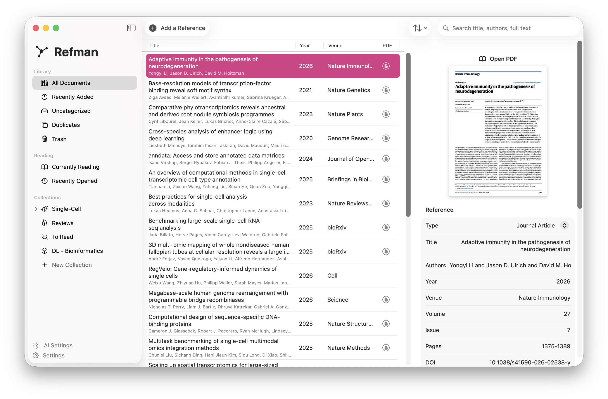
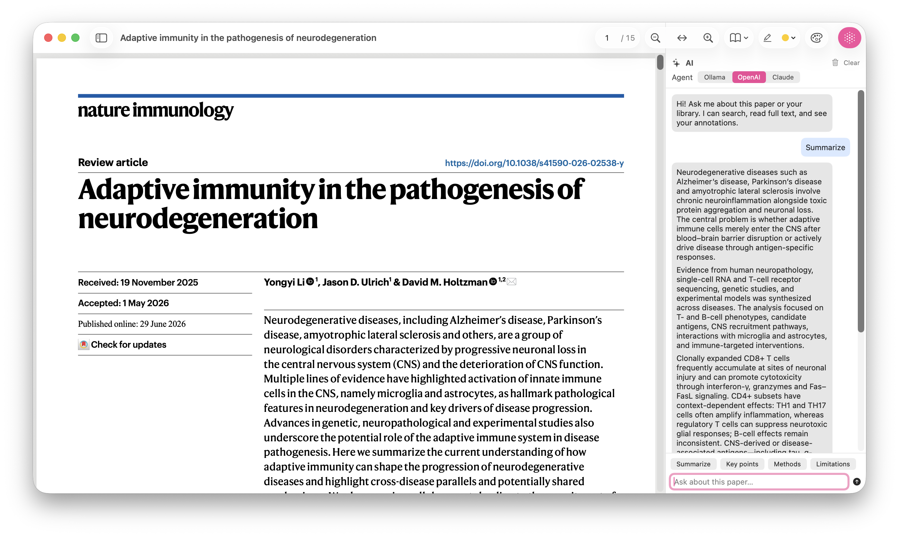

Your Personal Agentic
Reference Manager.
Organize papers, read and annotate PDFs, and export citations, with an AI assistant grounded in your own library. Works with OpenAI, Claude, or a fully local model.
curl -LsSf https://refman.datavil.org/install.sh | sh

Read with an AI research assistant
Ask questions, generate summaries, and explore key points, methods, and limitations while the source paper stays in view.

A complete workflow for your papers
From import to citation, Refman keeps your literature organized, searchable, and grounded.
Full-text search
SQLite with FTS5 indexes every paper. Search titles, authors, and the full text of your PDFs in milliseconds.
Smart import
Drag in a PDF and Refman scans for DOI/arXiv IDs, then resolves metadata from CrossRef and arXiv. .bib and .ris too.
Annotate as you read
A PDFKit reader with highlights, underlines, and notes, written into the PDF and mirrored to a searchable database.
Cite anywhere
Export clean BibTeX, RIS, or CSL-JSON. Your references travel wherever your writing goes.
Agentic assistant
Chat with OpenAI, Claude, or a local model. It calls library tools to ground answers in your actual papers. Your choice of agent.
Local or iCloud
Keep your library entirely on-device, or store it in iCloud Drive to reach it from every Mac. PDFs are content-addressed by SHA-256.
Get Refman
Download the latest release and drag it to your Applications folder.
Download for macOScurl -LsSf https://refman.datavil.org/install.sh | sh